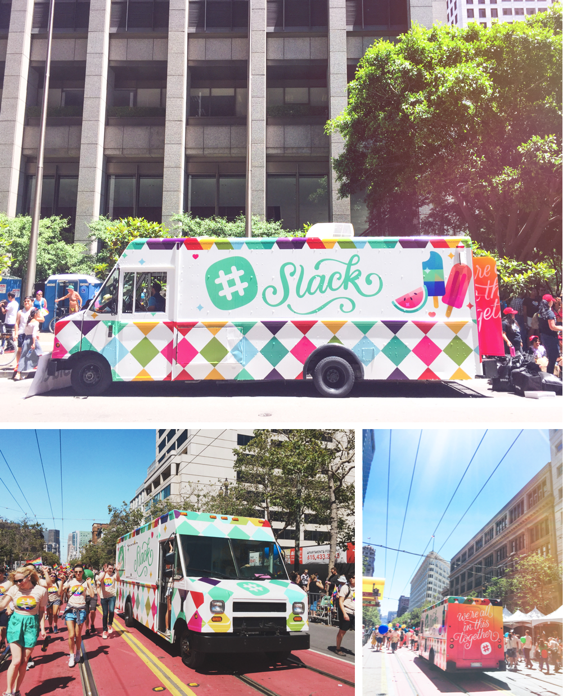
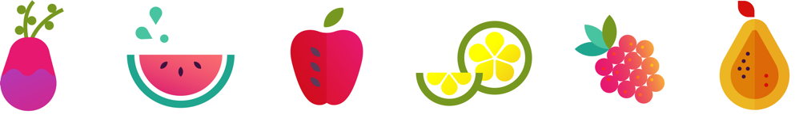
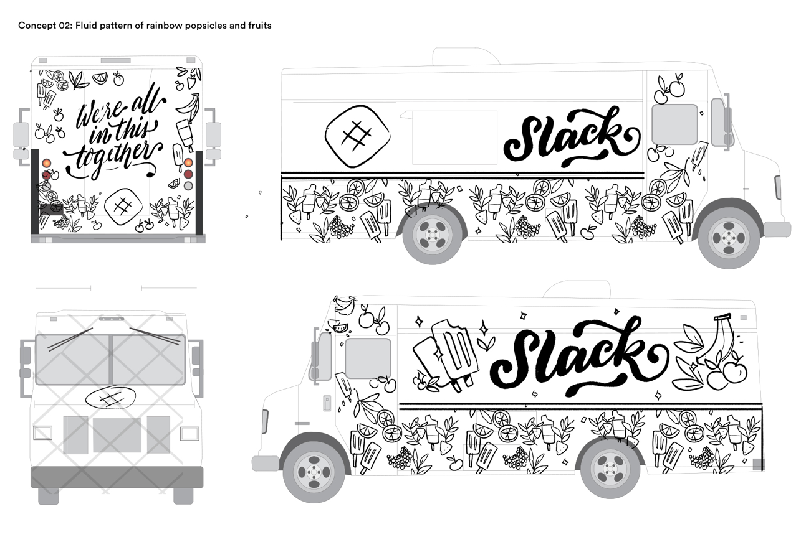
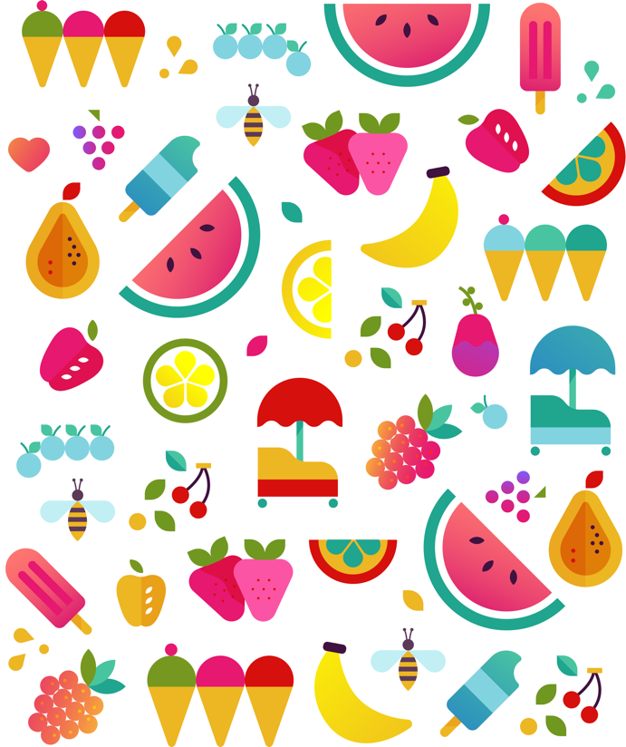
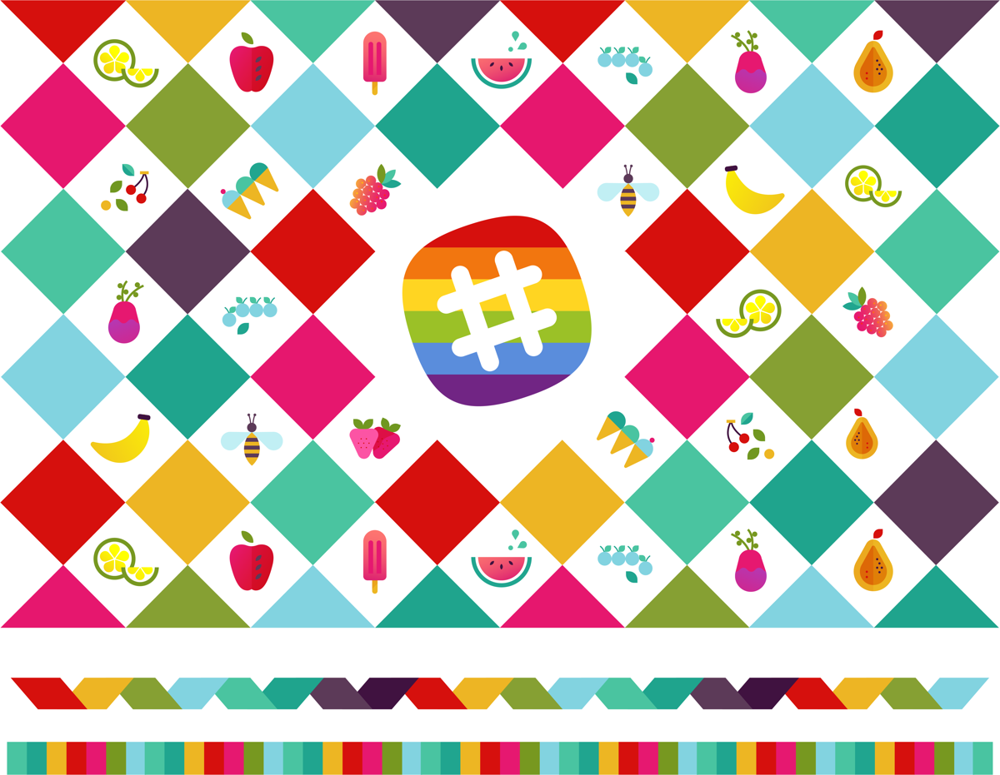
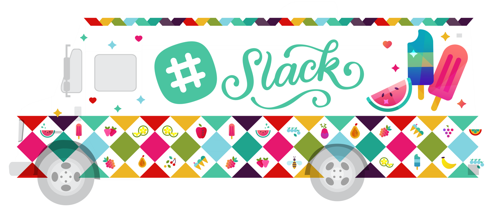
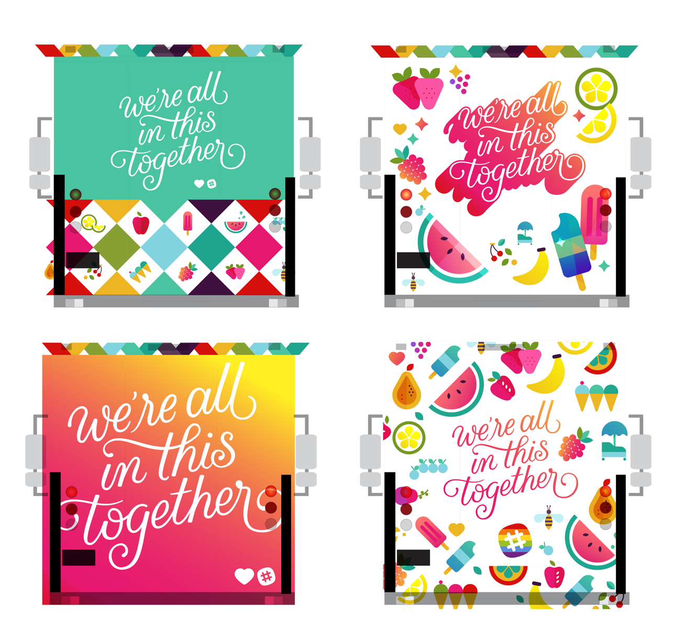
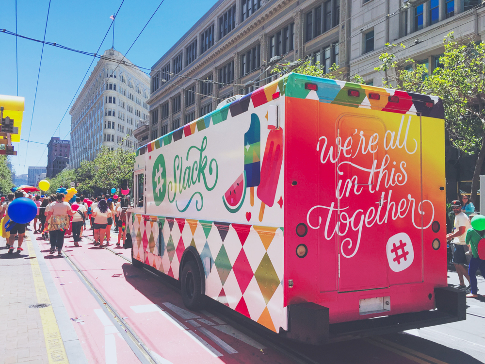

The making of an ice cream truck!
Pride is an annual celebration of acceptance, diversity, and love — a beautiful and joyful weekend that brings the city together. For the 2016 San Francisco Pride Parade, I designed an ice cream truck for Slack, designed to spread cheer and sweet treats as it drove down Market Street during the parade. Here's a look at the process from initial sketch to finished truck!
 Rainbows and sparkles, in the name of love!
Since the original concept behind the ice cream truck was to, well, distribute ice cream, Slack project coordinator Lynn and I had the idea that the flavor options could be clearly identifiable on the outside of the truck — a “menu” of sorts. This pattern of bright fruity popsicles was the direction that we took to final.
Initial pencil sketches
Next, in taking the artwork to final, I had fun unleashing my inner Lisa Frank on this — creating juicy patterns of sparkly fruits and starry rainbow trimmings to my heart's content!
 Patterns and trimming details
Side: Fruits, hearts, Lisa Frank-esque sparkles galore!
Back: A few playful options for the back of the truck — we ultimately went with the full-bleed, gigantic script in the bottom left.
Love is love is love
I feel lucky to live in a city like San Francisco — a liberal place where love and acceptance are values shared and celebrated by neighbors, communities, and so many companies alike.
Please consider donating to organizations that continually advocate for and support LGBTQ+ rights, such as the Human Rights Campaign and The Trevor Project! After all: